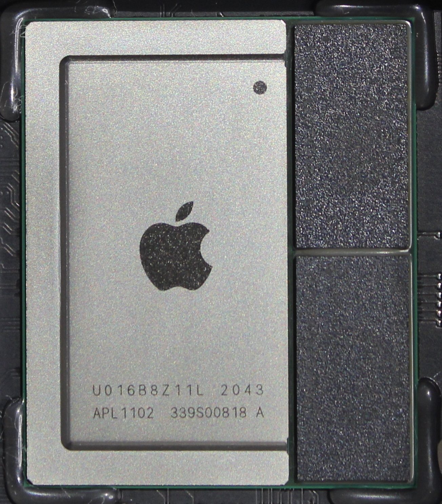

Apple M1
|

APPLE M1 chip |
|
| Manufacturer | Apple |
|---|---|
| Name | M1 |
| Architecture | aarch64 |
| CPU | 3.2 GHz 8cores (4× Apple Firestorm high-performance + 4× Apple Icestorm high-efficiency) |
| GPU | Apple-designed integrated graphics (either 7 or 8 cores dependent on base spec) |
| Year | 2020 |
| Process | 5nm |
| Community Page | https://github.com/AsahiLinux |
| Components | |
| CPU |
Works
|
| UART |
Works
|
| Storage |
Works
|
| USB |
Works
|
| Display |
Works
|
| GPU |
Broken
|
| Pinctrl |
|
| I²C |
|
| SPI |
|
| Audio |
Partial
|
| Video |
Works
|
| Thermal |
|
| WiFi |
Unavailable
|
| Bluetooth |
Unavailable
|
| Modem |
Unavailable
|
| GPS |
Unavailable
|
| Camera |
Broken
|
| Suspend |
Partial
|
{kind=link}
Development
Bootloader
Currently requires chainloading m1n1 after iboot, [1] .
Graphics
Please check [2]
WiFi
M1 doesn't have built-in WiFi module. Every device uses it's own WiFi module typically of broadcom origin
Bluetooth
M1 doesn't have built-in bluetooth module. Every device uses it's own bluetooth module typically of broadcom origin
Modem
GPS
M1 doesn't have built-in GPS module.
Audio
Audio is currently limited to line out by default on devices with internal speakers, this hopefully will change soon
Devices with a Apple M1 Chipset
| Device | Mainline |
|---|---|
| Apple MacBook Air |